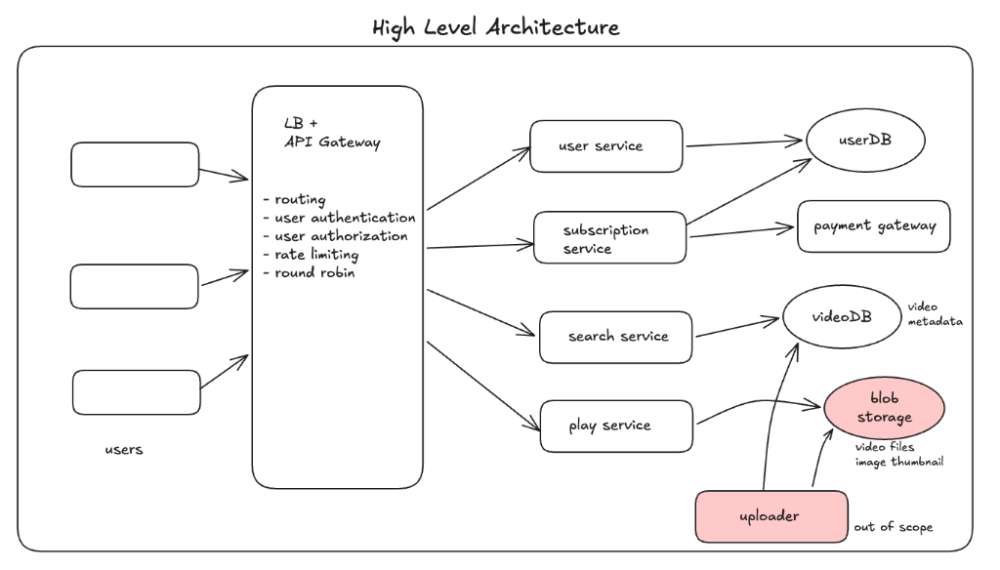
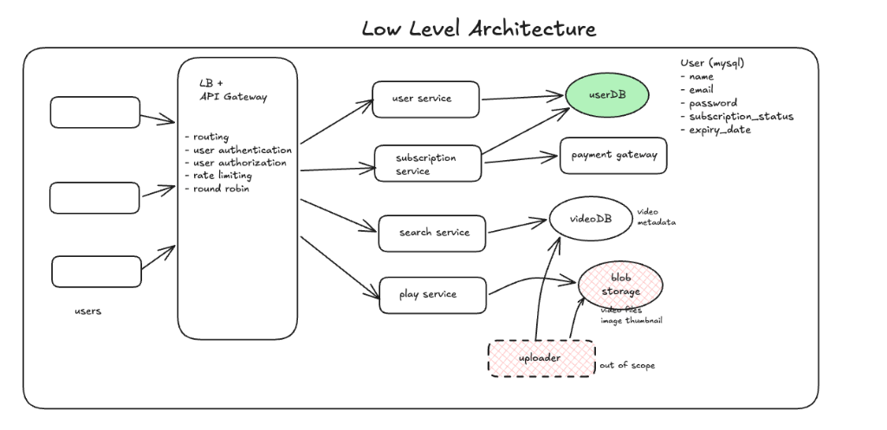
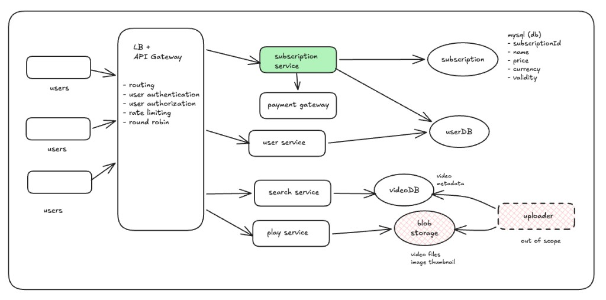
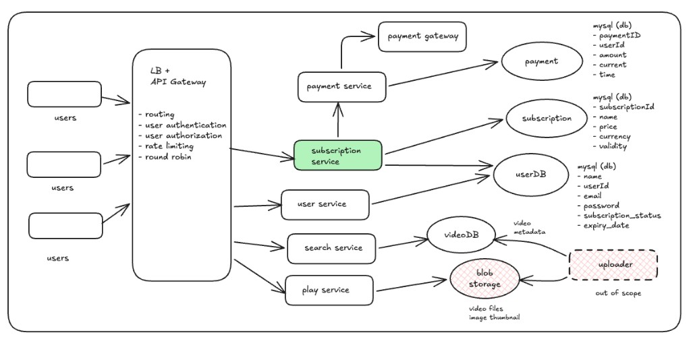
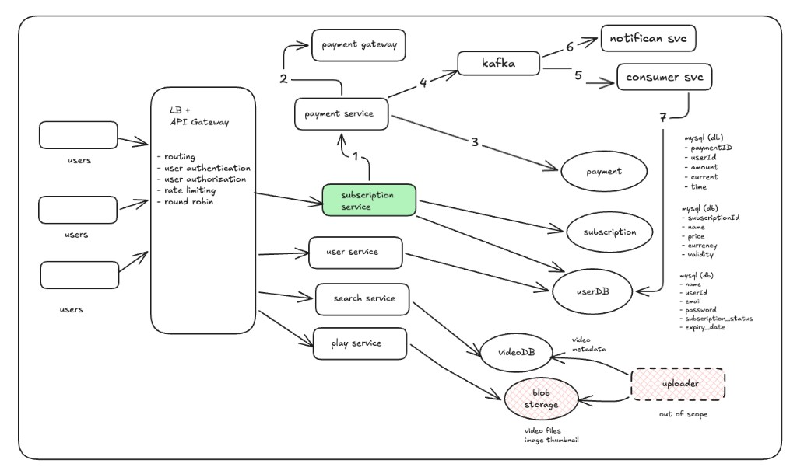
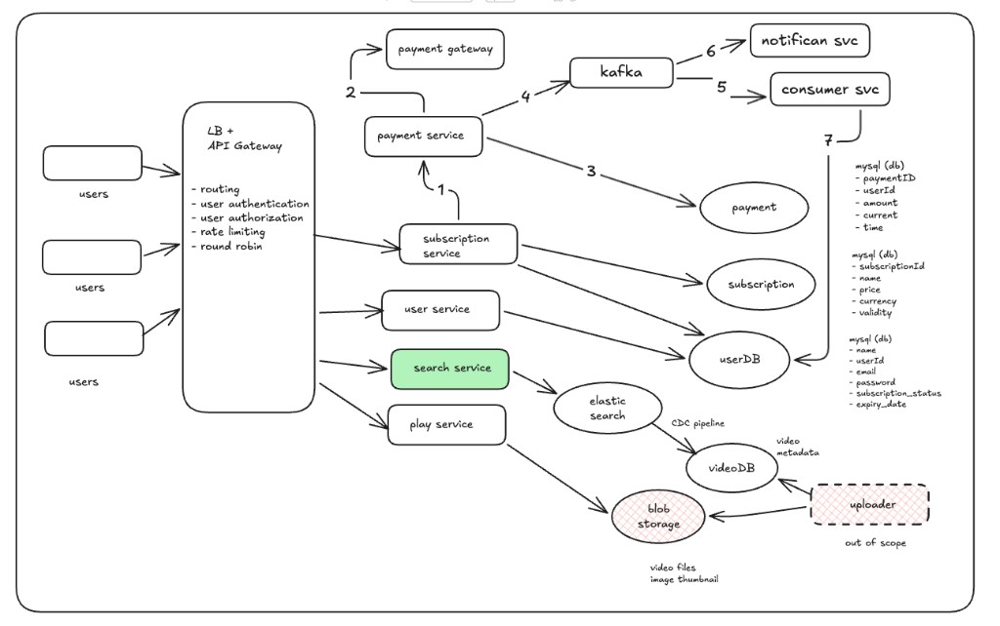
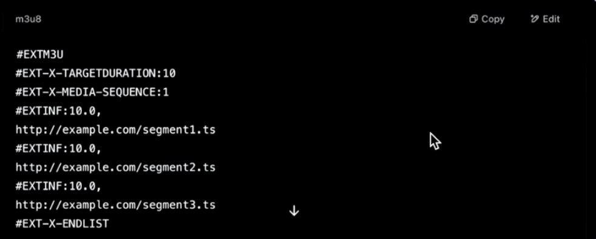
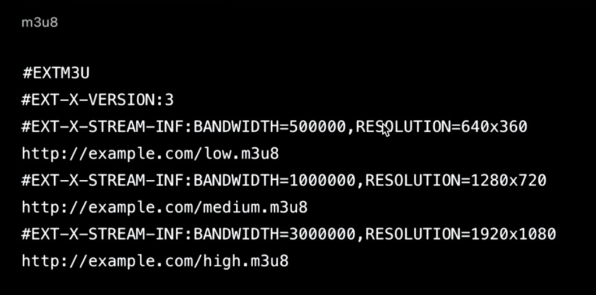
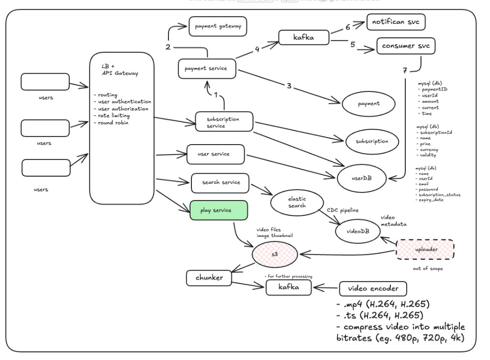

Summary
An OTT platform is a service that delivers digital content, like movies and TV shows, directly to consumers via the internet. This is one of the simplest High-Level Designs (HLDs) you can get. We will go ahead with the Netflix model where a user can't see anything for free; the user has to register and then select and pay for a subscription, then only are they allowed to watch content. This guide covers video processing, backend architecture, API design, and streaming protocols.
Functional Requirements
- User registration and subscription: User should be able to create an account and opt for a subscription.
- Content search: User should be able to search and find movies/shows based on video title or names.
- Video playback: Users can watch videos in different resolutions (480p, 720p, 1080p, 4K, etc.).
- Recommendation engine (Out of Scope): Since this involves majorly AI/ML components, the interviewer would typically say let's keep that out of scope.
Non-Functional Requirements
- Scale: 200 Million users, 10K videos on Netflix (~1 hour each).
- CAP Theorem (Availability >>> Consistency): For OTTs, we need high availability over consistency because whenever a user comes to the application, it should be up and running with practically zero downtime so that it doesn't interrupt the watching experience. However, we do need a strongly consistent system for the payment and subscription modules, but not for the video module (Netflix takes time to upload and process videos).
- Latency: Very critical requirement; users should be able to view videos with nominal or zero latency. There should not be any buffering, ensuring a seamless experience.
Core Entities
- User
- User Metadata — Info of subscription plan etc.
- Video
- Video metadata — Static images (for thumbnails) + description
API Design Overview
API design is very easy to do if functional requirements are captured properly.
1. User should be able to create an account and opt for a subscription
-
POST
/v1/user/register/— (+ additional endpoints for login/logout/update) -
To see the subscription models present:
GET/v1/subscription/plans— Returns all subscription plans. -
Once the user likes any subscription plan, they buy that
plan:
POST/v1/subscription— POST BODY:{ user metadata + subscriptionID }.
This completes the API design of the first requirement.
2. User should be able to search movies, shows on video titles and names
-
GET
/v1/videos/search?q={name}— Returns a partial listList<VideoId>with Pagination. -
Now, the user can click on any one video from the search
criteria to see the complete details of the video:
GET/v1/video/{videoId}— Returns the video metadata (JSON).
3. Now, once the user sees the video they can click play to watch the video
-
GET
/v1/video/play/{videoID}— Start the video playback.
High-Level System Architecture

The entry point to our backend is a combined Load Balancer & API Gateway layer. It coordinates critical ingress operations:
- Load Balancing: Automatically routes client traffic across backend service instances using a Round Robin algorithm.
- User Authentication & Authorization: Validates user credentials and access permissions to ensure only subscribed users can access content.
- System Routing: Dynamically routes incoming HTTP requests to their corresponding downstream microservices (e.g., User Service, Subscription Service, Search Service, Play Service).
- Rate Limiting: Prevents service overload and protects APIs against denial-of-service (DDoS) attacks by throttling excessive requests.
Behind the gateway, the system is decomposed into specialized, decoupled microservices and infrastructure components:
- User Service: When a user lands on the website, the API Gateway routes registration and login requests here. It manages user profiles, authentication details, and account settings in the User DB.
- Subscription Service: Handles user enrollment for subscription plans. This service processes transactions via a third-party Payment Gateway. Upon successful payment, it updates the user's subscription status and registers them with the correct subscription ID inside the User DB.
- Search Service: Enables users to query for movies and TV shows based on titles, genres, or names. It queries a highly optimized search database (e.g., Elasticsearch) to return quick paginated results.
- Play Service: Once a user finds a movie via the search criteria, they request to watch it. The Play Service coordinates playback by fetching the video's streaming manifest file (HLS/DASH) detailing the locations of video chunks for various resolutions.
- Uploader Service (Internal): Handles internal video uploads by content administrators. It stores raw video files and static thumbnails in Blob Storage, triggering the encoding pipeline.
- Blob Storage (S3): Stores raw source video uploads, static thumbnails, and the final chunked/encoded video segments in multiple resolutions (e.g., 480p, 720p, 1080p, 4K).
Low-Level Design

User Service
The User Service handles user authentication and authorization. It persists all user data in our application, storing user profile metadata securely inside the User DB.
User DB
Since the user account data is relatively simple but demands high consistency and availability, we use a relational MySQL database. The schema structure is structured as follows:
-
User (MySQL Table):
nameuserIdemail(Unique)password(Hashed)subscription_statusexpiry_date
When a user logs in to the application, their login credentials are validated against the User DB. If authentication is successful, the service generates and shares a JWT token with the client. The client includes this JWT token in the headers of all subsequent API calls to other backend microservices.
Subscription Service
Now in the video streaming service HLD, now we'll talk about Subscription Service. As soon as user logs in to the application, the user will try to see what are the subscription available in the system.

Subscription DB
To store all the subscription we need a subscription database, to store all the subscription. Subscription Service talks to subscription database. All the subscription relation metadata would be stored in that database. Since in this case it is simple straightforward data, we'll use MySQL database. The schema structure is structured as follows:
-
Subscription (MySQL Table):
subscriptionIdnamepricecurrencyvalidity
So now once the user logs in, it will fetch all the subscription
from this endpoint
GET /v1/subscription/plans which
will return all the subscription which is stored in the database,
based on that subscription list the user will try to opt for a
particular subscription.
Payment Service
Once the user confirm a particular subscription he will land to a payment service. Where user has to put all payment related credentials and once user clicks on pay, internally we call an external third-party service called payment gateway. Where actual payment with the bank will happen here and based on the status of the payment. A notification or acknowledgment will come from gateway to our payment service that payment is either successful or failed.

Payment DB
And once the payment is successful or failed we have to save that info in a database. We'll have one more database called payment database. And payment database should be highly consistent, so we'll use MySQL database. This is how payment schema would look like:
-
Payment (MySQL Table):
paymentIDuserIdamountcurrenttime
Event Driven Architecture
So once the payment is done, we have to send notification to the user that the payment was successful and you have successfully opted for a particular plan. Also we have to update the db of the user, so in future when he login in he can see what is the subscription status and when it will end. And to perform both the activity concurrently we have to go with the event driven architecture. So for subscription service we will simply call a kafka service. Once the payment is done successful. We will send the event to the kafka broker. From kafka we will call notification service that the payment was successful. And also we have to update the user db. To update the user db, we have to write the consumer service.

Search Service
Since here we are searching over a DB, based on title and genre, so search would be query intensive because here we have to scan all the DB to find out the matching video/movies for user. And that approach is not at all optimal.
So we will use elastic search, so from search service we will call elastic search and that elastic search will talk to the video db. And would return the relevant content to the user. And we know that elastic is highly optimised for search. And we know that from video db to elastic we will use CDC pipeline.

Play Service
This is the most imp service —
In HLD we discussed that once the user search content from the database, we are simply play button, and request directly going to play service and play service, the play service will fetch the actual video file from Blob and it will play on the Front end. But practically that's not possible.
Let's say we are watching 4k movie, so size will be video for 1 hour would be around 40 GB, so for 2 and half hour would be 100 gb, so when we're playing that video it's not possible that that 100 gb will be downloaded in near real time. Because bandwidth is not possible, so we have to do something efficient, be it high or low bandwidth we should have smooth experience, we have already seen in youtube that while playing any video for first few seconds the video is a bit blurry, but the quality of video keeps increasing if we keep watching. In this way our view experience keeps changing, based on internet speed, but the video should not have any buffering.
So what happens in real world that, once the video is uploaded by backend team, the video are first processed before we send the video to client to watch.
Uploader Service
So the uploader service is used by OTT backend team, the team does two activities,
They upload the actual metadata data of the video in video db and upload actual video and actual thumbnail in the blob storage, i.e., s3 bucket, and once the video is uploaded it goes into a processing server, in processing server it encounter a server called chunker,
Chunker
The role is that it split the video in to small chunks, the entire video get piece into 100 chunks with the help of chunker service. Once the video is placed in S3 the chunker gets notification and chunker service starts it's work by dividing in 2 to 10 sec segments. And puts that into a streaming platform eg kafka for further processing. From this kafka broker, there would be another service, that will be encoding the video. And encoding would be done based on the video protocol that we are following in this system design.
Video Processing Concepts
Most common platform we use is -
- HLS (HTTP live streaming)
- DASH (Dynamic Adaptive Streaming over HTTP)
Based on the bandwidth of the device we stream the video accordingly.
- The video is divided into small chunk segments of 10 to 20 seconds
Then video encoder service comes in to play, which process the video based on the protocol we're following,
Let's say if we are following HLS, the video can go with .mp4 version if we are using DASH protocol then we have to go with .ts extension.
The video to be encoded in H264 format.
And later using video compressor the video is compressed into multiple bitrates, eg - 480p, 720p, 1080p, 4k etc
And once the video is compressed successful it is again put into the s3 bucket.
Now next major issue is, once the video is cut into chunks, how do it understand that which chunk comes after which. There should be a linkage between them. Otherwise video can't be stitch together.
To maintain the video sequence, we create a manifest file. It is a data in .xml where we keep the sequence of each and every file in the system.
This is just an example of a manifest file,

The chunker service is the one who create the manifest file.
Once the manifest file one part is done.
The compressor service compress video in further resolution, based on the resolution we are supporting, we are creating a playlist.
If we are supporting a lower resolution, we are having a lower playlist, depending on the resolution we use a playlist. The playlist is is basically the sequence of the video chunks in different resolutions.
Depending on the bandwidth the video segment is called.

